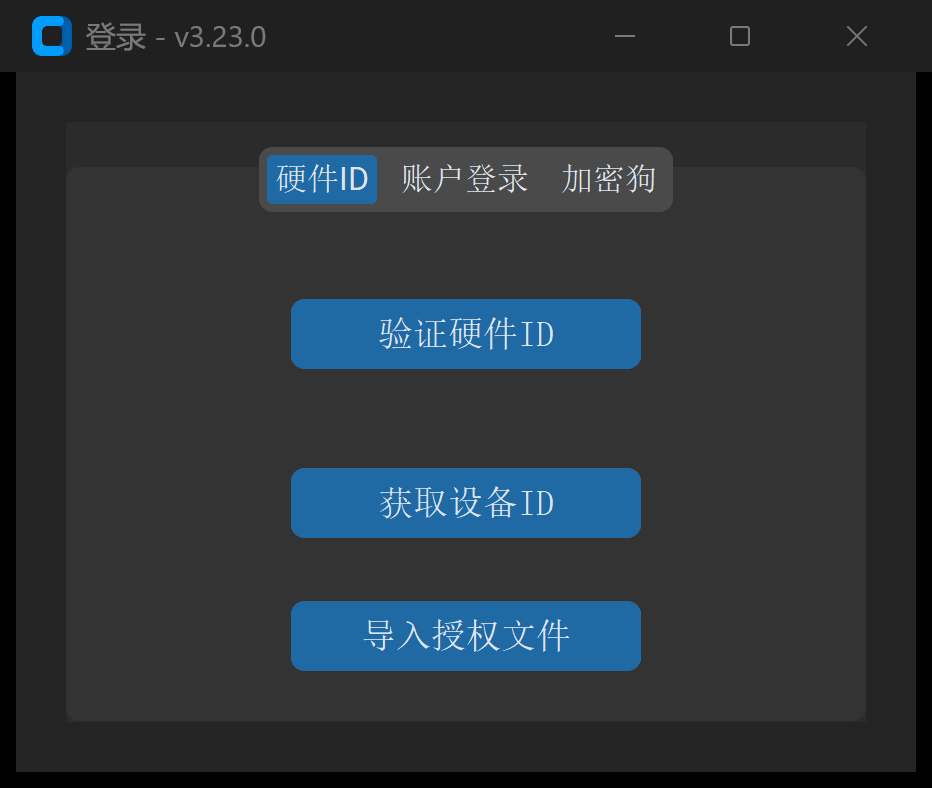

1.1 安装与授权激活
本节介绍 干涉磨削砂轮修整软件（IGD v3.23.0） 的运行环境、配置文件目录、后台进程池加速特性及 4 种授权激活方式。
系统环境要求
为确保高密度螺旋面点云（最终曲线点密度 ≥ 600）与多直径并行包络求解流畅运行，建议配置如下：
| 配置项 | 最低要求 | 推荐工程配置 |
|---|---|---|
| 操作系统 | Windows 10 (64-bit) / macOS 12+ | Windows 10 / 11 专业版 (64-bit) |
| 处理器 (CPU) | Intel Core i5 / AMD Ryzen 5（4 核及以上） | Intel Core i7 / Ryzen 7（8 核及以上，高主频） |
| 内存 (RAM) | 8 GB | 16 GB 及以上 |
| 显示器分辨率 | 1366 × 768（100% 缩放） | 1920 × 1080 或 2560 × 1440 |
| 外设与浏览器 | USB 2.0/3.0 接口（使用加密狗时） | Chrome / Edge（用于查看 3D HTML 报告） |
- Windows 专属加密组件：
高级参数 -> 初始化配置中的Siemens程序加密依赖 Windows 专用外部编译组件，仅在 Windows 系统下生效。 - macOS 触控板支持：macOS 版支持原生双指捏合缩放与双指滚动缩放交互画布。
安装与配置目录
- 软件部署与后台预热：
- 解压发行包至本地非系统保护目录（如
D:\IGD_Software\），双击启动主程序； - 授权校验通过后，软件会在后台自动预热常驻多核计算进程池与 Numba 磁盘缓存，并将子进程生命周期绑定至主窗口，大幅缩短首次多直径计算耗时（多档包络仅约 8 秒）且退出时无残留进程。
- 解压发行包至本地非系统保护目录（如
- 用户配置目录（
~/.igd）： 软件首次运行会在系统用户主目录（如C:\Users\<用户名>\.igd\或~/.igd/）下初始化配置文件，升级版本时不覆盖历史数据：igd_config_main.json：保存基本参数、高级参数、language_code与ui_scaling；igd_config_draw.json：保存绘图工具全部子模块参数；igd_config_tool.json：保存工具箱全部子模块参数；igd_license.lic：导入离线数字签名授权后生成的本地许可凭证；PartsLibrary/：保存用户在工具 -> 零件库中归档的三文件独立配置包。
四种授权激活方式

启动软件时按优先级自动检测授权；未自动通过时弹出登录窗口，支持以下 4 种方式：
方式 1：USB 硬件加密狗（推荐）
- 将配发的 USB 加密狗插入计算机，启动软件即可直接跳过登录界面；
- 进入主界面后，左下角状态栏显示
🟢 加密狗授权已激活； - 若启动后才插入加密狗，可切换至
加密狗标签页点击验证加密狗； - 热插拔保护：后台守护线程每 3 秒自动巡检一次硬件；运行期间拔出加密狗将自动安全退出，计算途中掉线将拦截并提示
加密狗已断开或会话已失效，无法执行核心计算！。
方式 2：导入授权文件（.lic）
- 点击登录窗口中的
导入授权文件按钮，选中官方签发的*.lic授权文件； - 验证签名与有效期通过后自动写入
~/.igd/igd_license.lic并进入主界面。
方式 3：硬件 ID 离线激活
- 切换至
硬件ID标签页，点击获取设备ID获取本机硬件特征码； - 将特征码提交技术支持换取授权配置后，点击
验证硬件ID完成绑定。
方式 4：账户登录与注册
- 在
账户登录标签页输入用户名与密码，点击登录； - 首次使用可点击
注册，填写用户名、密码、确认密码、官方发放的注册码与本机硬件ID完成激活。
定制版模块权限
IGD 根据当前加密狗或 .lic 许可中的 UI 策略动态适配功能可见性：
- 标准全功能版：开放 4 大主标签页、全部 14 种数控
程序模式及全部工具箱模块； - 专机定制版：仅显示对应机床适用的
程序模式与必需参数栏，防止现场操作工误触无关变量；如需增开模块请联系技术支持更新授权。